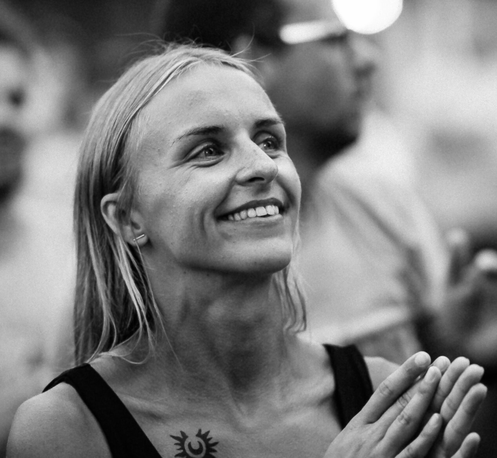

Ilona Čeginskaitė

Summary
I am a Senior QA Engineer, and I am currently expanding my knowledge by learning web development.
Education
Bachelor’s Degree of Mathematics and Applications of Mathematics, Vilnius University (2011 - 2015)
Work Experience
- Senior Test Engineer - Podimo (August 2024 - Present)
- Senior Test Engineer - Devbridge (May 2021 - August 2024)
- Test Engineer - Devbridge (May 2018 - May 2021)
- Test Analyst - SEB bank (January 2017 - May 2018)
- Test Specialist - EIS Group Lietuva (July 2016 - December 2016)
- Junior Test Specialist - EIS Group Lietuva (February 2015 - July 2016 )
Certifications
- SQL for Data Science
- Certified Tester Foundation Level(CTFL)
- Advanced Level Test Analyst (CTAL)
Skils
- Manual testing
- Automation testing
- Testing Practices
Other